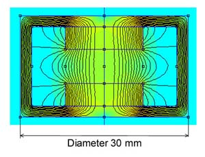
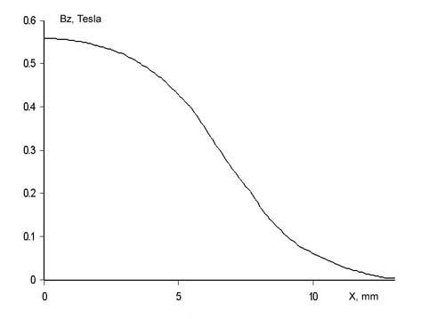
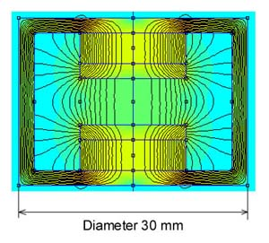
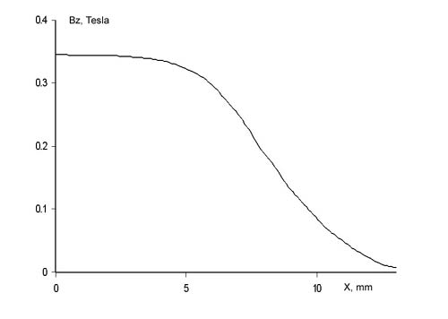
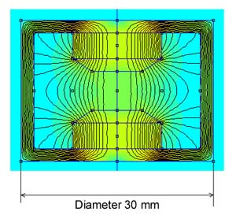
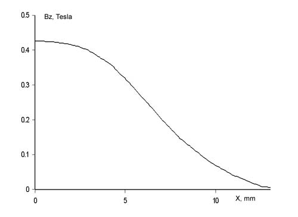

Расчет магнитного поля в
зазоре между двумя постоянными
цилиндрическими магнитами методом конечных элементов:
распределение магнитного потока, магнитная индукция в зазоре
Постановка задачи
При конструировании некоторых типов систем на постоянных магнитах возникает задача: получить максимальную индукцию в зазоре. Способом ее решения иногда выбирают использование стальных полюсных наконечников. Но, насколько правильным является такое решение? Можно ли в действительности повысить магнитную индукцию в зазоре заданной ширины между двумя постоянными магнитами при использовании стальных полюсных наконечников?
Пусть имеется система, состоящая из двух цилиндрических соосно расположенных постоянных магнитов состава Ne-Fe-B (остаточная индукция 1.05 Тл, коэрцитивная сила по намагниченности ~880 кА/м), намагниченных аксиально в одном направлении в установке импульсного намагничивания [7]. Типоразмер магнитов Д14 х 4 (диск диаметром 14 мм, высотой 4 мм). Ширина зазора между магнитами 6 мм. Для замыкания магнитного потока использован цилиндр из низкоуглеродистой стали с толщиной стенки 2 мм. Эту систему будем дополнять стальными полюсными наконечниками из низкоуглеродистой стали толщиной 2 мм. Для сохранения ширины зазора магниты придется раздвигать на 4 мм и на столько же увеличивать высоту замыкающего цилиндра.
Расчеты велись методом конечных элементов [1, 2, 4, 6].
Результаты расчетов
На рис. 1 показан результат расчета магнитного поля в магнитной системе без полюсных наконечников. На рис. 2 представлена зависимость аксиальной составляющей магнитной индукции от радиальной координаты (в центре зазора). Максимальное значение индукции ~0.56 Тл.

Рис. 1. Распределение магнитного поля в магнитной системе без полюсных наконечников.

Рис. 2. Распределение аксиальной составляющей магнитной индукции в центре зазора магнитной системы без полюсных наконечников в зависимости от радиальной координаты.
На рис. 3 и 4 показаны соответствующие результаты расчета магнитного поля в аналогичной магнитной системе с полюсными наконечниками цилиндрической формы.

Рис. 3. Распределение магнитного поля в магнитной системе с полюсными наконечниками цилиндрической формы.

Рис. 4. Распределение аксиальной составляющей магнитной индукции в центре зазора магнитной системы с цилиндрическими полюсными наконечниками в зависимости от радиальной координаты.
Из рис. 2 и 4 видно, что использование цилиндрических стальных полюсных наконечников такого же диаметра, как и магнит, приводит к повышению однородности магнитного поля при существенном (~35 %) уменьшении максимального значения магнитной индукции (до ~0.34 Тл) в центре зазора.
При изменении формы полюсных наконечников (на конус) ситуация остается прежней. Максимальное значение магнитной индукции (~0.42 Тл) в центре зазора немного выше, чем для случая цилиндрических наконечников (при худшей однородности), и на 25 % ниже, чем при отсутствии наконечников (см. рис. 5 и 6).

Рис. 5. Распределение магнитного поля в магнитной системе с полюсными наконечниками конической формы.

Рис. 6. Распределение аксиальной составляющей магнитной индукции в центре зазора магнитной системы с коническими полюсными наконечниками в зависимости от радиальной координаты.
Измерения
Для проверки расчетов использованы постоянные магниты вышеприведенного типоразмера и состава (Д14 х 4, Ne-Fe-B) с коэрцитивной силой по индукции несколько меньшей (примерно на 10 %), чем принято в расчетах. Магниты были установлены на губках стальных слесарных тисков. Для установки зазора использовалась калибрующая прокладка толщиной 6 мм. Измерения проводились с помощью тесламетра [5].
Результаты измерений: максимальное значение магнитной индукции в системе без полюсных наконечников 0.520 Тл, максимальное значение магнитной индукции в системе с цилиндрическими стальными полюсными наконечниками толщиной 2 мм 0.295 Тл.
Таким образом, результаты измерений подтверждают проведенные расчеты.
Выводы:
При построении магнитных систем вышеприведенной конструкции и аналогичных нет необходимости в использовании полюсных наконечников, если требуется добиться максимального значения магнитной индукции в зазоре.
Если же надо создать как можно более однородное магнитное поле, то следует использовать цилиндрические стальные наконечники.
Ссылки:
08.03.2005
01.02.2006
23.06.2010
17.02.2018
Альтернативные источники
энергии
Компьютеры и
Интернет
Магнитные поля
Механотронные системы
Перспективные
разработки
Электроника и
технология